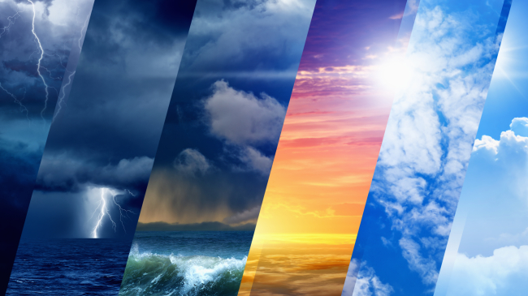

Since being a small child, I have been--and still am--avidly interested in climate sciences. I pursue this interest through many modes, whether it is through competitions, teaching, internships, or just very impassioned monologues on the science behind everyday 'marine layer' fog. Weahter phenomena fascinates me because it is absolutely magical in its science, sparking an interest from a young age. I have always wanted to pursue this interest as a career, and with the advent of AI, more interdisciplinary and novel roles are replacing the simple old forecaster. I have broadened my studies to include computer science and biology with the hope of discovering new ways that our changing climate is altering the world as we know it, potentially with the assistance of machine learning. However, my love for meteorology is a fundamental part of who I am, and it is the fascination of a lifetime.I love telling stories, being funny, and stepping outside the confines of everyday life in spectacular ways, so performing arts naturally drew my interest. My parents enrolled me in Bharatanatyam (classical Indian dance) as a little kid, and that has allowed me to explore my culture, physical grace, and expression through a very unique lens. Through expressive movements known as Abhinaya, I was able to learn how to tell stories with my body language and expressions. In contrast to that, I have also done theater since middle school, and it definitely gives the storyteller in me a free pass to bring imaginary worlds to life. Bridging the gap between Eastern and Western, classical and modern styles is something I love to do in my performances, as it allows for my unique perspective to be portrayed. I love how being on stage requires a huge community and results in a larger than life experience for the audience. All in all, I am both a scientist and an artist, and I really appreciate the skills both domains give me.
I would consider myself a naturally weird and unfortunately clumsy person, and this leads to many awkward situations. This has led to a sort of reputation as being inherently awkward, despite my abilities as a dancer. However, I do try to embrace it and am completely devoid of any social anxieties, potentially to my own detriment. However, I am glad I don't really care about what others think of me, as it doesn't hold me back and I rarely regret not taking chances. In addition, I enjoy food, eating food, and baking it. However, I am horrible at following recipes and most recipes turn out disastrous. For some reason, I continue to attempt things in the kitchen, perhaps because most things turn out edible after all. Yet, despite my clumsy nature, I have yet to get into any severe accidents (if we leave out falling down stairs and crashing my bike). Speaking of which, I love biking around my neighborhood, to school, the library, and the trails to the canyon behind my house. It is a fantastic opportunity to exercise while being in nature. Plus, it feels like flying, and isn't that amazing.